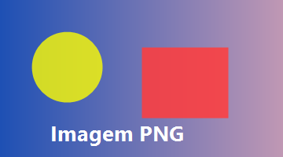
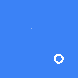

Imagens e animação


A esquerda é um PNG estático; a direita é um GIF animado — ele deve ficar trocando de cor sozinho. Funciona!
 — imagem inexistente mostra moldura tracejada com o texto alternativo.
— imagem inexistente mostra moldura tracejada com o texto alternativo.
Imagens, GIF animado, vídeo, formulários interativos, fontes


A esquerda é um PNG estático; a direita é um GIF animado — ele deve ficar trocando de cor sozinho. Funciona!
— imagem inexistente mostra moldura tracejada com o texto alternativo.
Reprodução de vídeo não é suportada — com poster ele exibe a imagem; sem poster, o placeholder escuro com o botão play.
Clique nos campos para digitar (o caret pisca), marque os checkboxes, troque o select e clique em Enviar — o formulário monta a URL de verdade e navega até o example.com com os valores. Funciona!
Impact via @font-face (arquivo TTF local)
Georgia — fonte serifada instalada no Windows
Consolas — monoespaçada código inline
Fontes instaladas funcionam; @font-face com TTF/OTF funciona; woff/woff2 não.
Verde = var(--cor-inexistente, fallback) funcionou.
Input com [type="text"] tem borda roxa grossa:
| H1 | H2 |
|---|---|
| a | b |
SVG inline (rasterizado):
Texto piscando (keyframes opacity)
Contador: 0
JS ainda não rodou aqui.
Rodapé — fim do teste 2.0.